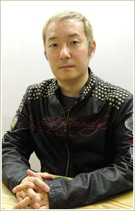

Masaya Onosaka is a Japanese voice actor. He is affiliated with Aoni Production. He voiced Pierre Vieira in Aquarion and Isaac Dian in Baccano!
- Gender: Male
- Birthday: October 13, 1964
- Hometown: Osaka, Japan

|

|
|---|
|  |
Masaya Onosaka is a Japanese voice actor. He is affiliated with Aoni Production. He voiced Pierre Vieira in Aquarion and Isaac Dian in Baccano!
|
|---|
| Keroberos |
|
Keroberos is the guardian of sun appointed by Clow Reed. After Clow Reed death, he chooses Sakura to be the next master od the Clow Cards. He becomes good friend with Sakura and her friend Tomoyo. He is bossy, demanding and a glutton but he cares for Sakura. He loves video games and sweets. Masaya Onosaka voices his true form |
Go Back to Main Page |
Go Back to Homepage |
|
|
|
OR |
|